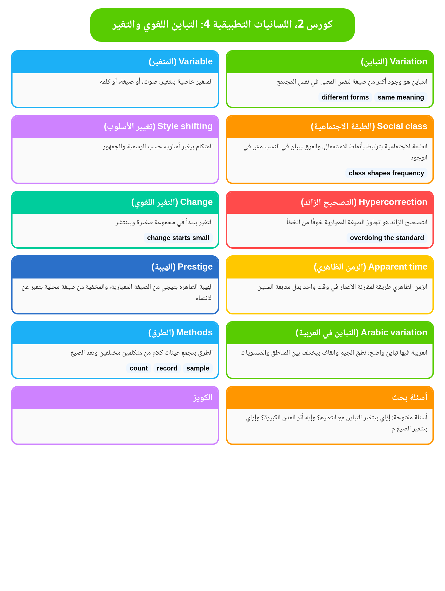

آداب الإنجليزية
: قواعد وجرامر وشعر وأساطير
⭐
0
🔥
استمر!
🗣️
كورس 2، اللسانيات التطبيقية 4: التباين اللغوي والتغير
📊
المستوى: من الصفر
كورس ٢ درس ٨٦
💬
القواعد الأكاديمية
📄 حمّل PDF الدرس
🧠 الخريطة الذهنية PDF
🧠 شوف الخريطة الذهنية للدرس

→
الدرس اللي قبله
كل دروس الكورس